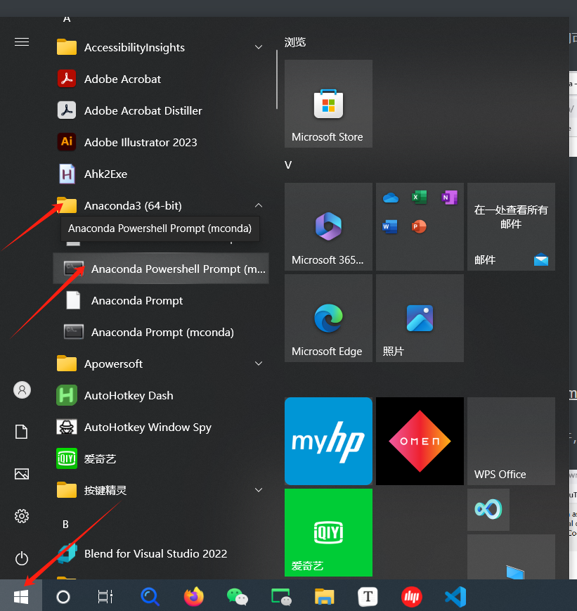
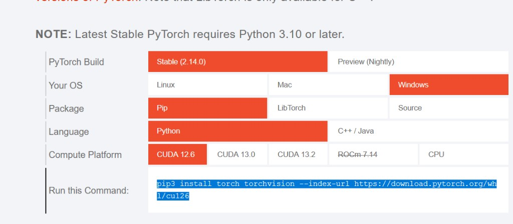

安装#
背景。 HABIT 是将肿瘤划分为生境（跨图像体素行为相似的子区域）并加以量化的 Python 包。
目的。 结束后你将得到名为 habit 的 conda 环境，其中 habit --version 会打印已安装版本。
关键词。
conda 环境 — 带独立 Python 与包的单独文件夹；
conda activate habit将终端切换到该环境，避免与别的软件冲突。
本页面向 Windows 绝对初学者（macOS/Linux 差异处会注明）。HABIT 须在 conda 激活 终端运行。Windows 用 Anaconda Prompt 或 Anaconda PowerShell Prompt （Miniconda： Miniconda Prompt ）。未 conda activate 的系统 Python 常 habit: command not found 或用错解释器。
支持 Python 3.10–3.14 ；本文档使用 3.10 。
1. 安装 Miniconda#
若已有 Anaconda 或 Miniconda，跳至步骤 2。
打开官方下载页：Miniconda。
查看 设置 → 系统 → 关于 → 系统类型 。多数 PC 为 64 位 ；下载与之匹配的 Windows 安装包（
.exe）。运行安装程序并接受默认选项（下一步 → 下一步 → 安装）。
使用 HABIT 不必 安装 Visual Studio Code。
2. 打开 conda 终端#
Windows （已装 Anaconda / Miniconda）：
点击 开始 （Windows 徽标）或按 Windows 键。 Windows 10 开始图标通常在 左下 ； Windows 11 常在任务栏 中下 。
在开始菜单打开 Anaconda3 （或 Miniconda）文件夹，点击 Anaconda Prompt 或 Anaconda PowerShell Prompt （Miniconda： Miniconda Prompt ）。
或：打开开始菜单，输入
Anaconda Prompt/Miniconda Prompt并打开该应用。可选： Anaconda Navigator → Environments → 创建
habit环境后在其上 Open Terminal。


开始 → Anaconda3 → Anaconda Prompt / Anaconda PowerShell Prompt （以 Windows 10 为例；Windows 11 上开始图标可能在底部居中）。你的文件夹名可能不同（例如 Miniconda）。#
打开 Prompt 后常见 (base) 。属正常。
macOS / Linux — 打开 Terminal.app / 您的 shell。若找不到 conda ，对 shell 运行一次 conda init 并重开终端。
3. 创建并激活 habit 环境#
在 conda 终端中：
conda create -n habit python=3.10 -y
conda activate habit
文档中环境名为 ** habit ** （任意名称均可，须 activate）。任何 (habit) 或 pip 命令前提示符须显示 habit 。每个新终端会话：再次 conda activate habit 。
4. 从官方 PyPI 安装 HABIT#
当提示符显示 (habit) 时：
pip install -U pip
pip install habitat-analysis -i https://pypi.org/simple
habit --version
5. 可选：PyTorch GPU#
仅 GPU 纹理 / TorchRadiomics 需要。 CPU 生境分析不需要。
打开 https://pytorch.org/ → Get Started （或 Start Locally）。选择 Your OS 、 Pip 、 Python 及与本机匹配的 Compute Platform ，运行页面给出的命令。


pytorch.org 示例：Windows + Pip + Python + CUDA 12.6。将红色单元格改为与您的 GPU 一致或选 CPU。将 Run this Command 复制到 (habit) 提示符中。#
6. 可选：PyRadiomics#
默认不安装。 voxel_radiomics / supervoxel_radiomics 、 habit radiomics 以及纹理生境特征需要它。不使用这些提取器的生境图不需要。
Windows —— 使用 Release v1.0.2 预编译 wheel（ 勿 用裸 pip install pyradiomics ）:
pip install https://github.com/lichao312214129/HABIT/releases/download/v1.0.2/pyradiomics-3.1.0-cp310-cp310-win_amd64.whl
Python 3.11–3.14 请改文件名中 cp310 。
macOS / Linux:
pip install "pyradiomics>=3.0.1,<3.2"
可选包#
这些 不 改变生境计算。仅安装您使用的部分。
pyarrow — 将 直接池化 体素表（约数百万行）写 parquet。典型两步法/一步法表很小；CSV 无需额外包。保存表可选:
pip install pyarrow
napari — 交互式 habit view:
pip install "napari[pyqt5]" "npe2>=0.8.2" "pydantic!=2.11.*,>=2.8,<3" -i https://pypi.org/simple
GPU 纹理加速数字： 纹理特征图：单独与联合强度 。
从源码（开发者）#
git clone https://github.com/lichao312214129/HABIT.git
cd HABIT
conda create -n habit python=3.10 -y
conda activate habit
pip install -U pip
pip install -e .
habit --version
遇到问题？#
见 常见问题 。安装后： 快速开始：Python API 或 快速开始：YAML 与 CLI 。